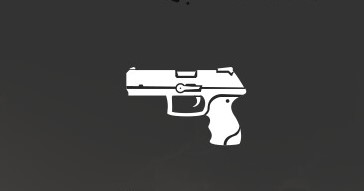
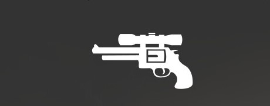
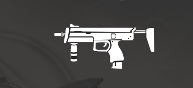
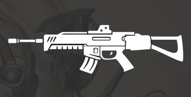
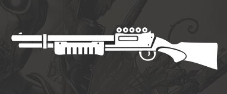
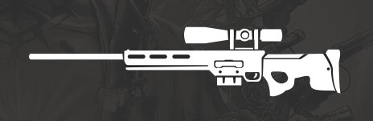

Armas-Base
Os tipos de armas sao: pistola, revolver, smgs, fuzil de assalto, shotguns e fuzil de precisao.
-
Pistola: d6 Perfurante | 1,150po | 1kg | Munição ( alcance 12/42 ),

Recarga a cada 5 disparos, Combate, Leve, Disparos: 2 no nivel 5. -
Revolver: d12 Perfurante | 1,650po | 1kg | Munição ( alcance 20/60 ),

Recarga a cada 6 disparos, Combate, Leve, Disparos: 2 no nivel 5. -
SMGS: d8 Perfurante | 1,950po | 1,5kg | Munição ( alcance 12/42 ),

Recarga a cada 10 disparos, Combate, Versátil, Disparos: 3 no nivel 5, 4 no nivel 11 e5 no nivel 15. -
Fuzil de Assalto: d10 Perfurante | 2,050po | 2,5kg | Munição ( alcance 45/65 ), Duas mãos,

Recarga a cada 10 disparos, Disparos: 3 no nivel 5, 4 nivel 11 e 5 nivel 15. -
Shotgun: 2d12 Concussão | 2.000po | 3 kgs | Munição (alcance 9/18),Duas mãos, Dispersão (Cone, d10),

Recarga a cada 6 disparos, Carregamento De Bago. -
Fuzil de Precisão: 4d8 Perfurante | 2.900po | 8 kgs | Munição (alcance 60/300), Duas mãos,

Recarga longa 4, Pesada, Volumosa.
Propriedades-das-Armas
Algumas armas possuem propriedades especiais listadas na sua descriçao como as seguintes:
-
Combate: Armas de fogo leve ou de longo alcance com a propriedade combate não impõem desvantagem ao fazer uma jogada de ataque com uma enquanto uma criatura hostil está a 1,5 m de você.
-
Volumosa: Armas de fogo leve e de longo alcance com propriedades volumosas devem ser estabilizadas para serem disparadas com eficácia devido ao seu peso e aos danos que podem causar com um único tiro. Você não pode atacar mais de uma vez durante seu turno enquanto empunha uma arma de fogo volumosa.
-
Carregamento De Bago: Armas de fogo com a propriedade de carregamento de "Bago" exigem que você recarregue sua arma inserindo cada uma das munições de cada vez. Como uma ação bônus, você pode recarregar três peças de munição na arma em seu turno. Alternativamente, você pode gastar uma ação durante o seu turno para recarregar todas as munições na arma de uma vez.
-
Leve: Armas leves podem ser usadas com apenas uma mao.
-
Versátil: Armas com essa propriedade podem ser usadas com duas maos ou apenas uma.
-
Duas Maos: Para disparar com esse tipo de arma é presciso usar as duas maos.
-
Pesada: O usuario so pode ter uma arma no invetario com a propriedade pesada.
-
Dispersão: As armas de fogo com a propriedade dispersão têm dois tipos de ataques: um ataque de alvo único e um ataque de tiro de dispersão.
Um valor de dano entre parênteses aparece com a propriedade; o dano quando a arma de fogo faz um ataque de dispersão.
O ataque de dispersão atinge criaturas em um cone ou em uma linha de 4,5m de largura até o alcance máximo de sua arma. As criaturas dentro do cone ou da linha devem fazer testes de resistência de Destreza, a menos que estejam atrás da cobertura de 3/4 ou 1,5 / 3m atrás de outra criatura na direção da linha ou cone. A CD deste teste é (8 + seu bônus de proficiência + seu modificador de Destreza). As criaturas recebem a rolagem de dispersão de dano da arma em uma resistência falhada e a metade do dano em uma resistência bem-sucedida. Criaturas fora do alcance normal de sua arma de fogo têm vantagem neste teste de resistência.
Criaturas a até 1,5m de você no cone ou na linha sofrem o dano máximo possível se falharem no teste de resistência e sofrem a jogada de dano da arma de fogo se tiverem sucesso. No entanto, se o seu cone ou linha tem como alvo uma criatura ou criaturas dentro de 1,5 m de você, todas as outras criaturas na área de efeito têm vantagem no teste de resistência, recebendo metade do dano se falharem e nenhum dano se forem bem-sucedidos.
Você não pode fazer mais de dois ataques de dispersão por rodada usando um ataque de dispersão de arma de fogo.